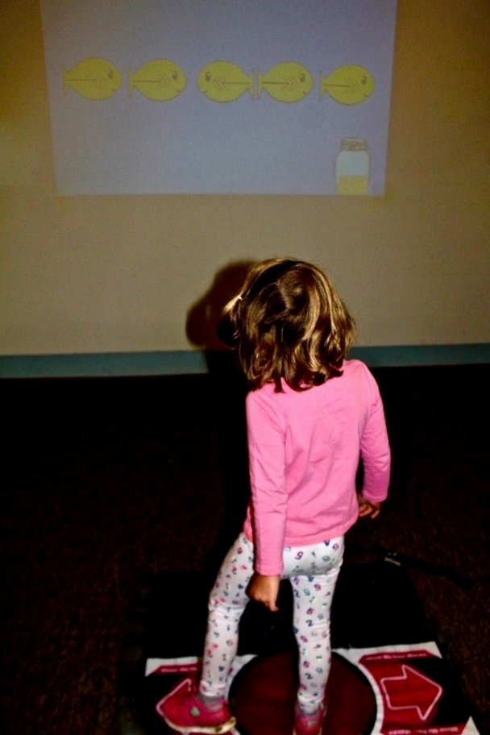
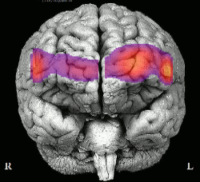

Developed an exercise-based interactive game to enhance cognition in 4- to 5-year-olds.

Using fNIRS to examine the short- and long-term associations between exercise-induced training, functional brain connectivity, cognitive control, and later verbal abilities in 4- to 5-year-olds

Modifying commercially available physically active video games in virtual reality to improve attention regulation in students